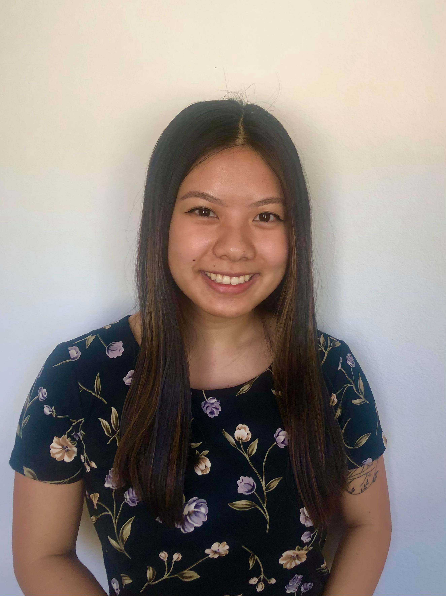

Geospatial Data Analyst
Enhancing Global Nutrition Programs with AI
I had the privilege of being one of the main contributors to this cross collaboration with Nutrition International. In this project, we built a GeoAI platform to identify the locations of households most at risk of being missed by the health system -- those not receiving the health and nutrition services required for child survival. You can read more about this partnership here.
Capstone Project
When I was a sophomore in college, I began to explore how I could apply my statistics knowledge to help create a more a sustainable world. I became particularly interested in global issues related to food security and the environment and wanted my future work to focus on addressing these critical challenges. I was fortunate enough to find a spot in a biogeochemistry lab on campus ( The Dirty Lab), where I learned about the profound impact soils have on our environment and their potential for mitigating climate change. This experience inspired me to write my senior thesis on carbon dynamics in soil. Here, I was able to hone my coding skills in R and had the opportunity to analyze real-world data outside of the classroom (it was not as pretty!). To read my senior thesis, which I'm incredibly proud of, click here.
Class Projects
Datafest